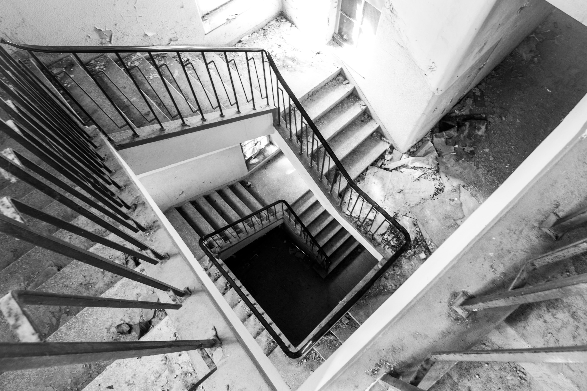
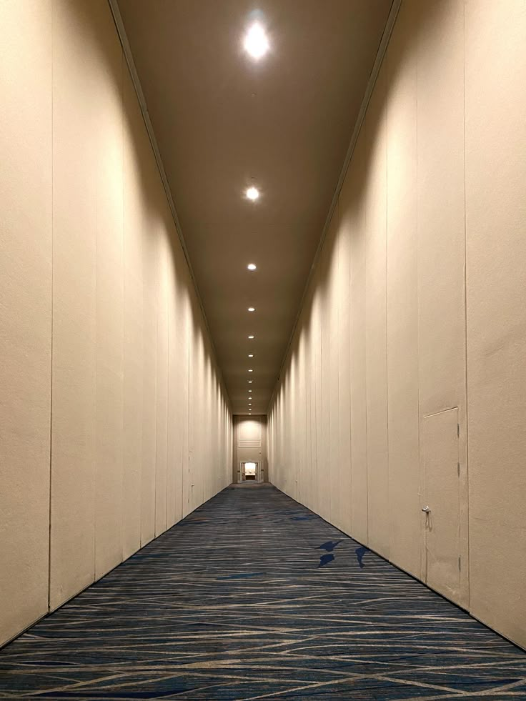
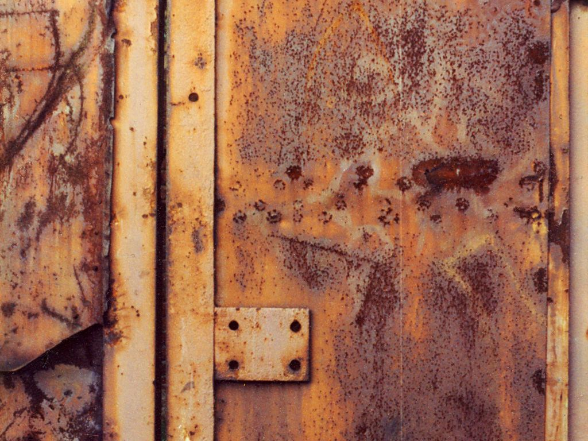
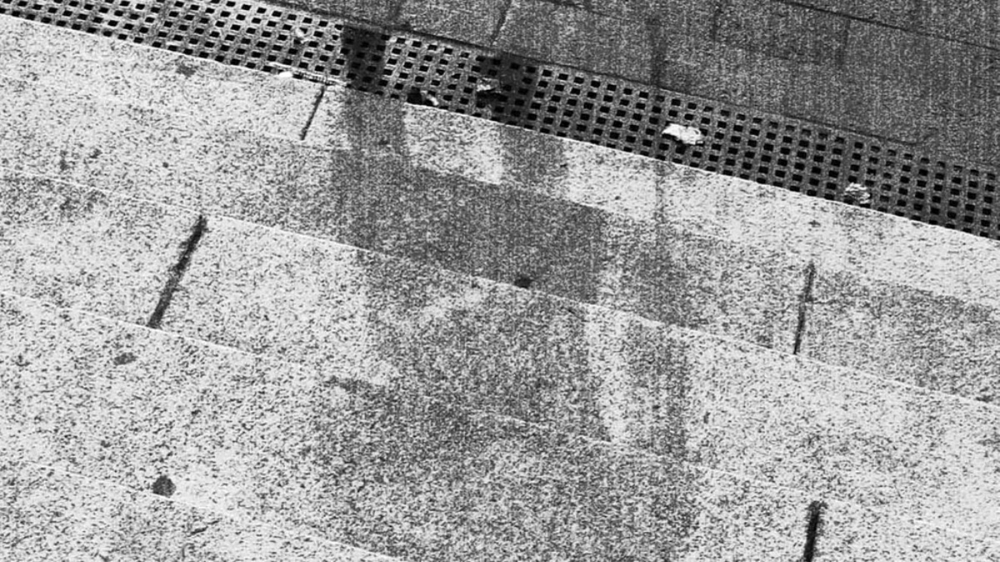

Куда ведёт дверь, которой вчера не было
Мы провели ночь в обычном подъезде. И нашли больше вопросов, чем ответов. Хроника одного наблюдения.
Читать историю / 12 минут
Свежие наблюдения

Кто отвечает в пустой квартире

Тень, которая приходит раньше
«Мы не ищем призраков. Мы ищем трещины в ткани привычного мира, через которые сочится непознанное».
Наше издание посвящено исследованию городских мифов, маргинальных пространств и пограничных состояний психики. Мы верим, что самая странная магия скрыта в обыденности.
Подписывайтесь на наш архив, чтобы получать полевые отчеты, которые не попадают в основную ленту. Остерегайтесь зеркальных поверхностей.